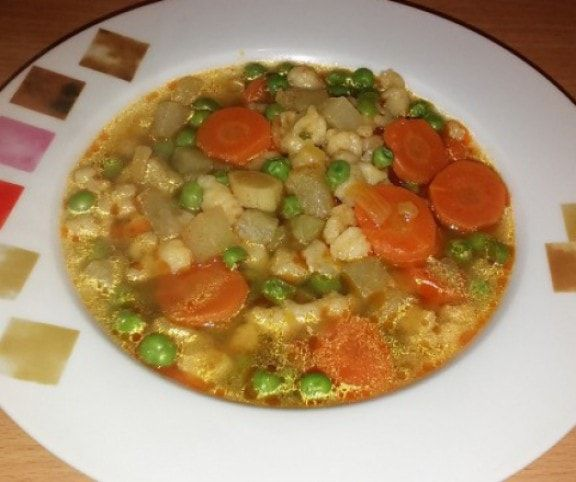
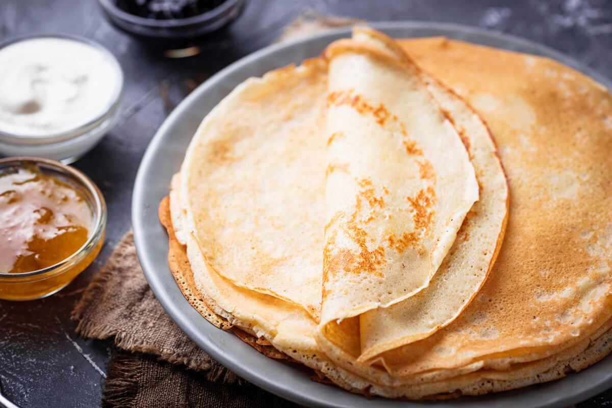

Borsóleves galuskával

Elkészítés
- Az apróra vágott vöröshagymát kevés olajon a megdinszteljük, majd hozzáadjuk a borsót, megsózzuk és összepároljuk. Ezután megszórjuk pirospaprikával, és felöntjük vízzel.
- A répát, a petrezselymet és a karalábét meghámozzuk, majd apró kockákra vágjuk. Ezeket is hozzáadjuk a leveshez, ízesítjük sóval és ételízesítővel.
- 5 percig főzzük, majd a kis kockákra vágott burgonyát is beletesszük és még 10 percig főzzük.
- Ameddig fő a leves, elkészítjük a galuskát. Ehhez egy tálba tesszük a lisztet, majd hozzáadjuk a tojást, pici sót és fokozatos víz hozzáadásával (0,5 dl) nokedli tésztát keverünk belőle.
- A galuskákat az elkészült, de még forrásban lévő levesbe szaggathatjuk. Amikor feljönnek a felszínre, főzzük még 1-2 percig. Forrón tálaljuk.
- 1 fej hagyma
- 0.5 dl olaj
- 40 dkg zöldborsó
- só
- 1 tk pirospaprika
- 2 db sárgarépa
- 2 db petrezselyem
- 1 db karalábé
- ételízesítő
- 4 db burgonya
Palacsinta

Elkészítés
- A palacsintatészta elkészítéséhez keverőtálba töltjük a tejet. Hozzáadjuk a tojást, az olajat, a csipet sót, és alaposan összekeverjük. Használhatunk hozzá robotgépet is.
- Hozzámérjük a lisztet, és sűrű, krémszerű tésztát keverünk belőle. Végül hozzáadjuk a szódát, vagy a szénsavas ásványvizet is.
- Nagyon fontos, hogy csomómentesre keverjük a palacsintatésztát. Sütés előtt pihentessük legalább 10-15 percet.
- Az első palacsinta sütése előtt a forró serpenyőbe egy kevés olajat öntünk (a következő palacsintáknál erre már nincs szükség, maximálisan elegendő, ami kisül a tésztából), és kisebb merőkanálnyi adagot öntünk rá a tésztából. Hagyjuk, elterülni a serpenyőben.
- A palacsintákat egyenként kisütjük mindkét oldalukon.
- Ízlés szerinti töltelékkel töltjük és feltekerjük, vagy hajtogatjuk. Megszórhatjuk porcukorral is, de nagyon jól illik hozzá a csokoládészósz és a vaníliasodó is.
- 20 dkg liszt
- 2 db tojás
- 3 dl tej
- 2 dl szénsavas ásványvíz
- 1 csipet só
- 0.75 dl olaj